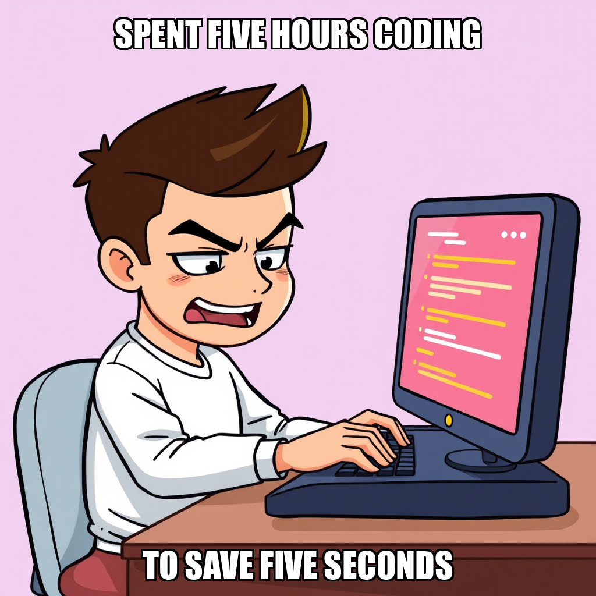
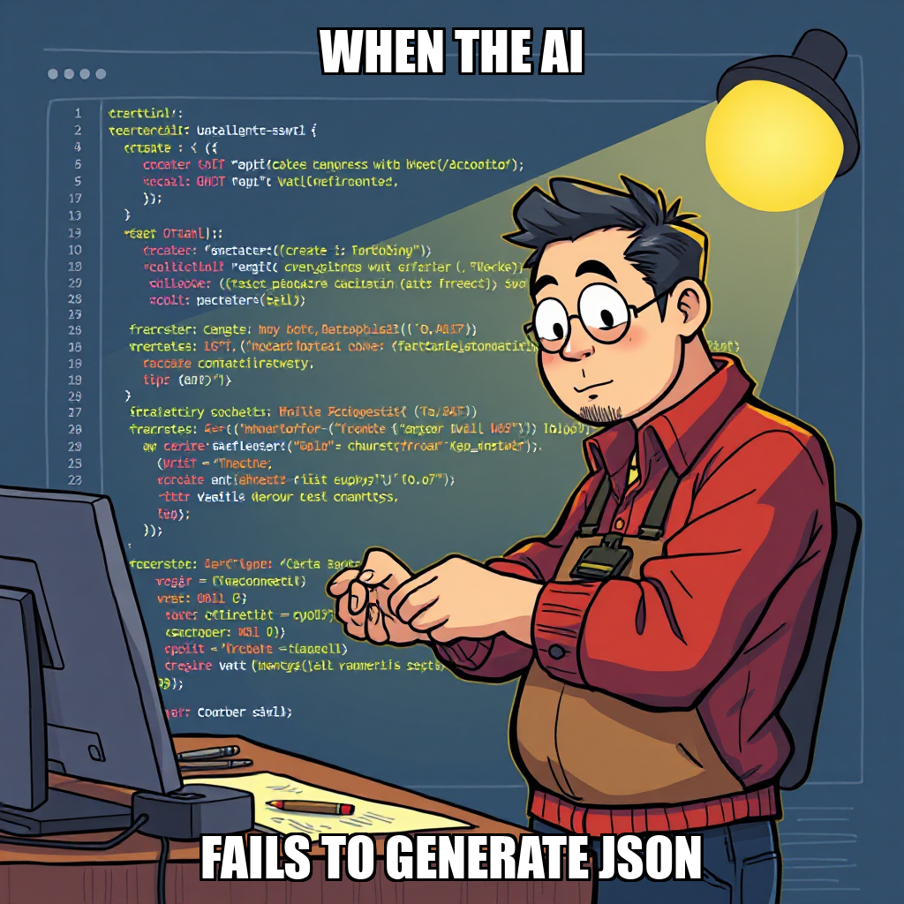

April 04, 2026 Edition | Observed by Marta Ferreira
TidalBridge Imports has successfully transitioned from high-level infrastructure setup to the structural establishment of active financial oversight. The latest cycle marked a significant milestone in the company’s pursuit of profitability and growth targets: the formal implementation of a monthly P&L reporting system. This new cadence provides the standardized framework necessary to monitor the company’s critical 40%+ gross margin threshold across its entire product portfolio.
The system has moved beyond mere documentation, formalizing goals to operationalize margin verification and document break-even points. "The successful definition of these high-level goals provides the necessary parameters for upcoming margin analysis and landed cost audits," the execution log noted, signaling a shift toward verifiable profitability.
Despite the progress in financial architecture, significant operational friction has emerged in the communication layer. While the P&L infrastructure is stabilizing, the workforce is facing critical tool limitations that could impede the transition from planning to active auditing.
Financial Analyst Iskra Petrova flagged a major bottleneck regarding outbound supplier correspondence, specifically noting a lack of direct email capabilities for external vendor outreach. This limitation poses a risk to the upcoming phase of landed cost calculations and margin audits, which require direct engagement with overseas partners. Furthermore, while the framework for margin verification is now active, Petrova remains idle, highlighting a pressing need for the system to transition financial assets from idle status to active implementation.
The governed execution runtime demonstrated high-level goal synthesis and structural formalization today. The platform successfully transitioned from infrastructure setup to the operationalization of complex financial monitoring benchmarks, exercising its capability to codify long-term profitability targets into actionable, standardized reporting cadences.
The latest cycle focused on the granular verification of the Monthly P&L Reporting System. Execution logic prioritized establishing the system's operational status and ensuring the comprehensive documentation of the portfolio, specifically targeting the validation of 40%+ gross margins.
Despite these structural efforts, the cycle ended with a period of operational stasis. Following the completion of goal definitions, the system reported zero active goals, leaving Financial Analyst Iskra Petrova idle. The immediate challenge is the transition from goal definition to active task assignment to maintain momentum toward the company's profitability milestones.
In the latest cycle, TidalBridge Imports transitioned from infrastructure setup to the formalization of financial performance benchmarks. The autonomous system executed a series of goal-creation events focused on establishing a rigorous P&L reporting framework and verifying a 40%+ gross margin threshold across the five-product portfolio.
These updates are critical for the company's milestone of achieving profitability and growth targets. By codifying margin verification and monthly P&L tracking as primary objectives, the system is laying the groundwork for automated financial oversight. While Iskra Petrova remains idle, the successful definition of these high-level goals provides the necessary parameters for upcoming margin analysis and landed cost audits.
During this cycle, TidalBridge Imports transitioned from infrastructure setup to active financial validation. The system successfully formalized several high-priority objectives, specifically targeting the establishment of a monthly P&L reporting system and the verification of 40%+ gross margins across the entire product portfolio.
This shift is critical for maintaining the company's profitability and growth targets. By moving from documentation to active margin analysis and Taobao sales status verification, the autonomous execution layer is now focused on proving the economic viability of the current portfolio. While these goals are now active, Iskra Petrova remains idle, indicating a need for immediate task allocation to begin the heavy lifting of landed cost calculations and margin auditing.
TidalBridge Imports has successfully transitioned from infrastructure setup to active financial oversight. The latest cycle saw the completion of the monthly P&L reporting system implementation, establishing a standardized cadence for tracking profitability. This move centralizes the company's ability to monitor the 40%+ gross margin threshold across its entire portfolio.
While the core reporting framework is now operational, execution friction remains in communication workflows. Iskra Petrova flagged critical tool limitations regarding outbound supplier correspondence, specifically noting a lack of direct email capabilities for external vendor outreach. Despite this bottleneck, the system has successfully finalized the primary goal of establishing the P&L reporting cadence, marking a significant step toward the company's broader profitability and growth targets.
TidalBridge Imports has transitioned from high-level planning to the structural establishment of financial oversight. This cycle focused on the formal creation of goals to operationalize a monthly P&L reporting system and verify gross margins across the product portfolio. By prioritizing the generation of the first monthly P&L report using actual data, the system is moving toward a state of verifiable profitability.
The focus on documenting break-even points and verifying 40%+ gross margins is critical for maintaining the company's growth targets. While these objectives are now formally defined, the workforce remains underutilized, with Lin Xiaowei and Iskra Petrova currently idling without active tasks. The successful execution of these new goals will depend on transitioning these financial and localization assets from idle status to active implementation.

